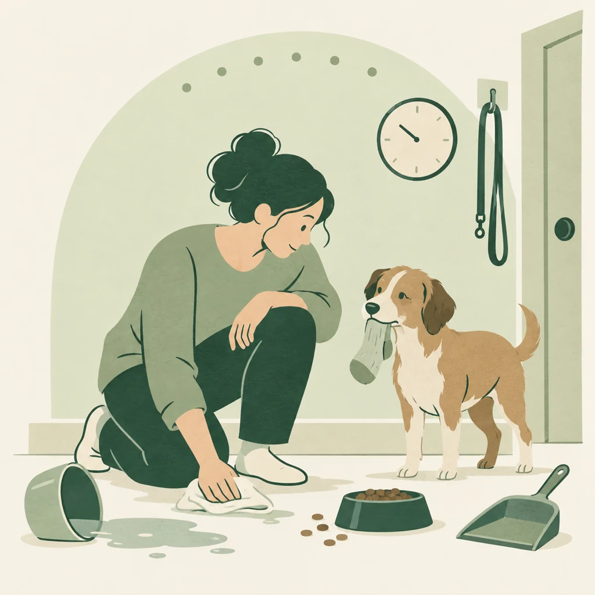

웹에서 체험
브라우저에서 공개 알파를 열고 서비스 소개와 온보딩부터 시작해 보세요.
웹 체험 열기 ↗강아지 입양 전, 7일 생활 연습.
돌봄이 더해진 나의 하루를 돌아보고
함께할 준비를 차근차근 살펴보세요.
웹 공개 알파 · iPhone 앱 App Store 정식 출시

주거 환경과 외출 시간 등 현재 생활 조건을 입력하며 돌봄이 들어올 자리를 생각합니다.
돌봄을 연습할 프로필을 선택합니다. 실제 강아지의 성격이나 입양 적합성을 판정하는 과정은 아닙니다.
시간대별 돌봄을 기록하고 하루를 돌아봅니다. 7일 뒤에는 준비된 점과 더 확인할 항목을 정리합니다.
시간을 낼 수 있는지, 어떤 돌봄이 어려운지.
일상의 작은 기록에서 다음 준비를 찾아보세요.
브라우저에서 공개 알파를 열고 서비스 소개와 온보딩부터 시작해 보세요.
웹 체험 열기 ↗웹 체험에 빠르게 접근할 수 있도록 브라우저의 홈 화면 추가 기능을 이용할 수 있습니다.
홈 화면 추가 안내 ↓App Store에서 iPhone 앱을 내려받고, 7일 생활 연습을 시작해 보세요.
iPhone 앱 다운로드홈 화면 추가 안내
먼저 웹 체험을 연 뒤, iPhone의 Safari에서는 공유 메뉴의 ‘홈 화면에 추가’를, Android의 Chrome에서는 메뉴의 ‘홈 화면에 추가’ 또는 설치 항목을 확인하세요. 브라우저·버전에 따라 메뉴가 다르거나 제공되지 않을 수 있습니다. 현재 정식 PWA 설치·오프라인 사용은 지원 준비 중이며, 홈 화면 추가만으로 오프라인 동작이 보장되지는 않습니다.
아니요. 생활 속 돌봄을 연습하고 더 준비할 항목을 살펴보는 도구입니다. 실제 반려견의 성격·건강을 진단하거나 입양 적합성을 판정하지 않으며, 전문가의 상담을 대신하지 않습니다.
웹 공개 알파는 위 링크에서 체험할 수 있습니다. iPhone 앱도 정식 출시되어 위의 ‘iPhone 앱 다운로드’ 버튼에서 App Store로 이동해 내려받을 수 있습니다.
저장 환경과 기능별 데이터 처리를 확인하려면 개인정보 처리방침을 읽어 주세요. 이용 중 오류나 기록 관련 문의는 고객지원으로 보내실 수 있습니다.
공개 GitHub 저장소에서 코드와 참여 안내를 확인할 수 있습니다. 공개 이슈에는 연락처나 개인적인 돌봄·회고 기록을 올리지 마세요.